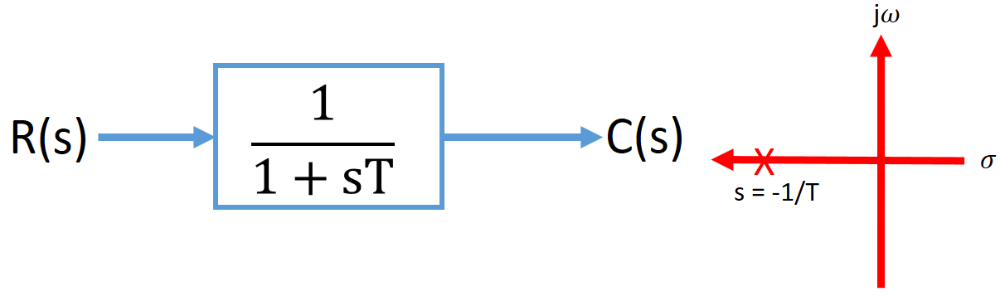

HOME BLOG EBOOKS ABOUT CONTACT SHOP
First order systems are those systems which can be described by first order differential equations. In First order systems the highest power of ‘s’ in the denominator of the closed loop transfer function is 1.
The general form of the transfer function of First order systems is,
Where T is the time constant of the system.

The Unit Impulse response of a first order system is given by,
Note that the input pole at the origin is responsible for the steady state response and the system pole at s = -1/T is responsible for the transient response. So the transient response is totally dependent on the parameter T, the Time constant. The time constant can be defined as the time taken by the step response to reach 63% of its final value.
The steady state error ess can be found as,
An example of a first order system is a series RC circuit.